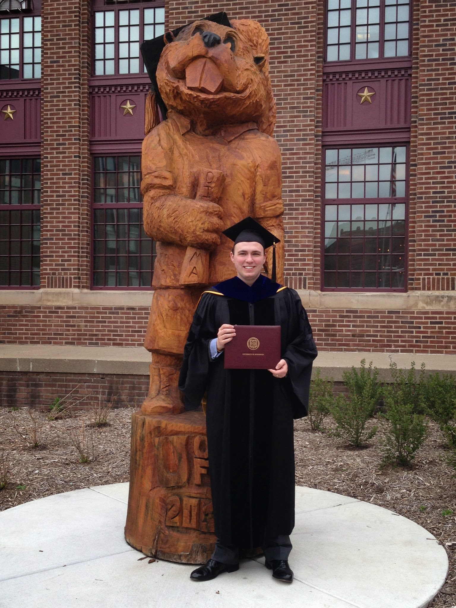

About Me – Sean Bartz
Home / About Me – Sean Bartz
Posts
{kind=link}
About Me:
I grew up in Indianapolis, Indiana. I attended Xavier University in Cincinnati, where I earned a BS in Physics and Mathematics.
I earned my PhD in Physics from the University of Minnesota in 2014, studying nuclear theory with my adviser Joe Kapusta. During my PhD studies, I was a Doctoral Dissertation Fellow and a Department of Energy Office of Science Graduate Fellow.
In my spare time, I play basketball, ride my bicycle, and kayak. I coached a Minneapolis Parks youth basketball team for three years.
My bicycling Eddington number is 26 as of October 19, 2019. I have completed two century rides with friends, and I hope to complete both days of the next Hilly Hundred (I did one day in 2019, but there was too much rain the other day).
I was interviewed for this podcast about my experience viewing the Great American Eclipse in 2017. I provided an audio recording that I took while watching the eclipse, one snippet of which made the episode.
I was interviewed for this article about the physics of the movie Donnie Darko, and this article about Stephen Hawking’s impact on physics.
My preferred equipment:
- The Scannable app is extremely useful for sharing handwritten notes with students and collaborators, and archiving them on Evernote
- My bike is a Bianchi Iseo
- I’m often seen wearing an Albuquerque Isotopes hat to represent Nuclear Physics, though I have yet to visit New Mexico